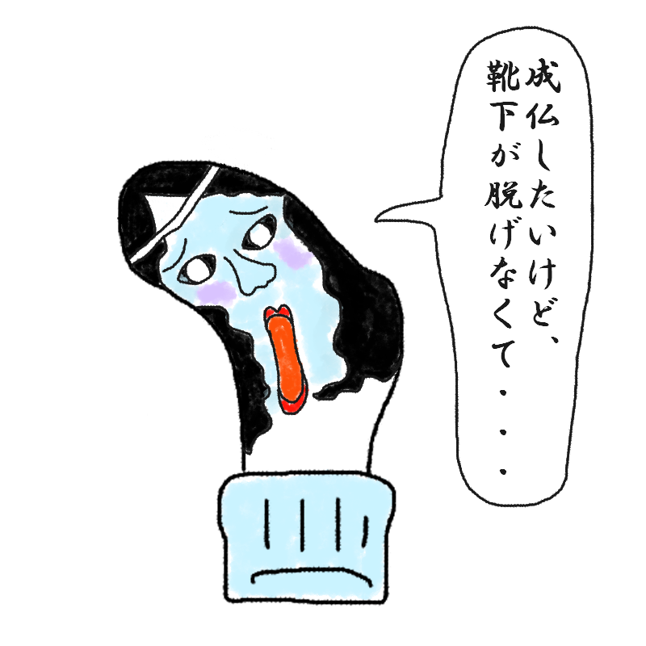

あなたの診断結果
？ ？ ？ （キャラクター名前募集中）足裏の薬指にあく人
【成仏したいけど現世の執着が強すぎて
顔が濃くなってしまった地縛霊型】

「成仏したいけど、靴下が脱げなくて……。」
この世への執着でまさかの濃い顔化！脱出不能のドロドロ地縛霊！
あなたは、「あまりの影の薄さに耐えかねて、強烈な執着心という名のエネルギーで『濃い顔』を手に入れてしまった地縛霊タイプ」です。
足指の中で最も影が薄く、存在を忘れ去られることに耐えられなかった薬指の裏。
彼女は、自らの儚い透明感を克服するために、禁断の「執着の術」を使ってしまいました。
その結果が、このシリーズらしからぬ、目鼻立ちのくっきりした濃すぎる表情です。
「成仏したい…でも靴下が邪魔で…」と口では言いつつ、その表情からは現世（靴下の繊維）への濃密な執着と未練が溢れ出ています。
もはや透明人間ではなく、物理的に濃いです。
つかみどころがないどころか、強烈すぎて目が離せない、個性的な地縛霊さんです。
あなたの特徴
- 足指のなかでも圧倒的に影が薄かった反動で、強烈な執着を身につけた宿命
- この世への未練が具現化した、シリーズ屈指の濃すぎる顔立ち
- 幽霊なのに地面から浮くどころか、靴下に濃く濃く憑依している
- 静かに穴が空いたのではなく、執着でドロドロと溶けて穴が空いた怪奇現象
顔が濃いということは、それだけエネルギーが有り余っているということ。
その強烈なエネルギーを、成仏ではなく、新しい靴下を求めて彷徨う力に使ってみないか？
きっと、君ほどの執念なら、どんな分厚い靴下も突破できるはずだ！
最後にひとつ。
顔が濃いということは、それだけエネルギーが有り余っているということ。
その強烈なエネルギーを、成仏ではなく、新しい靴下を求めて
彷徨う力に使ってみないか？
きっと、君ほどの執念なら、どんな分厚い靴下も
突破できるはずだ！
このキャラクターに名前をつける
思いついた名前を教えてね！
※このスタンプには日陰に消えたボツキャラが混ざっています
※この診断はただのお遊びです。
※靴下の穴が開く場所には個人差があります。